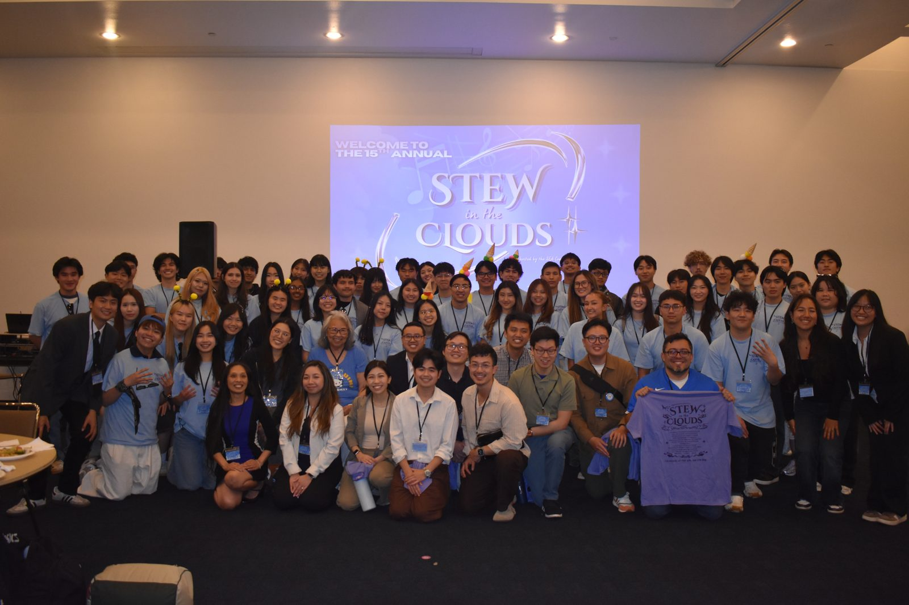

The story
The story of the dinner, and of the rotation decision behind this project, is being written. It will live in
CASE_STUDY.md.Constraint programming · Python · OR-Tools CP-SAT · GitHub Actions
At a real alumni dinner, ten career-themed host tables rotated between ten fams of admitted transfer students over two rounds. This solver finds the rotation that maximizes career-interest alignment and proves no better one exists. Even the best schedule leaves one fam with a host who shares none of its interests for one round. No schedule can avoid that.
Score 374, bound 374, proven optimal in 0.009 s · 10 hosts, 10 fams, 2 rounds, 67 admits · tests in CI on Python 3.10 and 3.12
Hosts rotate, fams stay seated, and no fam may meet the same host twice. A strong pairing used in round 1 is gone for round 2, so the schedule has to be planned as a whole.
A CP-SAT model with three constraints and a tag-overlap score. The solver returns a schedule plus a bound, and equal values prove optimality.
Four fams draw on the same four hosts for every nonzero match. Counting visits shows at least one zero-score slot is forced, in any schedule.
Each table was hosted by one or two alumni who share a career field. The tags are what a student at that table could ask about, and they drive the match score. Filter by area, then open a card to see how the table scored with every fam.

This is how the real dinner was scheduled: by hand. Pick a host for each fam in each round. The score next to each host is its match score with that fam. A host can sit at one table per round, and no fam can see the same host twice.
| Fam | Round 1 | Round 2 | Total |
|---|
In the solver's schedule, the Public Affairs & Communications fam gets the Pharmacy table in round 2, a score of 0. That looks like a solver mistake. It is not, and a short count shows why.
Each fam needs two visits, from two different hosts. The table below lists four fams and every host that scores above zero with each of them.
| Fam | Hosts scoring above zero |
|---|
These four fams need 8 nonzero visits. Only four hosts can supply them. Each host makes at most two visits in total, and at most one to any single fam. The Pharmacy table matches only one of the four fams, so it can supply one visit. That caps the supply at 7 visits for 8 slots.
At least one of these fams gets a zero-score slot in every feasible schedule. The test test_no_feasible_schedule_avoids_a_zero_slot confirms it: forbid every zero-score pairing, and CP-SAT reports the model infeasible.
Maximizing the sum is not the same as treating every fam well. The bars show each fam's two-round total. The dark mark is the median, 40, and the orange mark is 60% of it, the line the example flags for coaching.
Every cell is the match score between a fam and a host. Outlined cells are the optimal pairings, and the small number is the round. Most of the matrix is zero, which is why the schedule is tight.
T_h is the host's tag set and I_f is the fam's interest set. Rounding is Python's built-in round.
The same 10 hosts and 10 fams, with more rounds. Measured by benchmarks/rounds_sweep.py with a 10 s limit on Python 3.10.12 and OR-Tools 9.15.6755, in a 4 vCPU aarch64 Linux VM on an Apple Silicon MacBook Pro. Results matched across two runs.
| Rounds | Score | Bound | Proven optimal | Runtime (s) |
|---|---|---|---|---|
| 1 | 208 | 208 | yes | 0.005 |
| 2 | 374 | 374 | yes | 0.008 |
| 3 | 484 | 484 | yes | 0.046 |
| 4 | 538 | 568 | no, stopped at limit | 10.004 |
| 5 | 556 | 556 | yes | 2.148 |
| 10 | 574 | 1403 | no, stopped at limit | 10.004 |
Proven optimality in under one second held for up to three rounds. At ten rounds every host meets every fam once, so every feasible schedule scores 574, yet the solver could not close the bound in 10 s. Why four rounds is harder than five has not been investigated.
Boolean x[h, f, r]. C1: each host at one table per round. C2: each fam gets one host per round. C3: no host and fam pair repeats.
"Optimal" means the solver's objective bound equals the returned score. Anything less is reported as a gap, never as optimal.
pytest checks C1 to C3, the proven optimum on the example, this page's numbers against a fresh solve, and the forced-zero claim.
The example uses real fam profiles at the group level only. No alumni or admit names, employers, or contact details are in the repo.
CASE_STUDY.md.